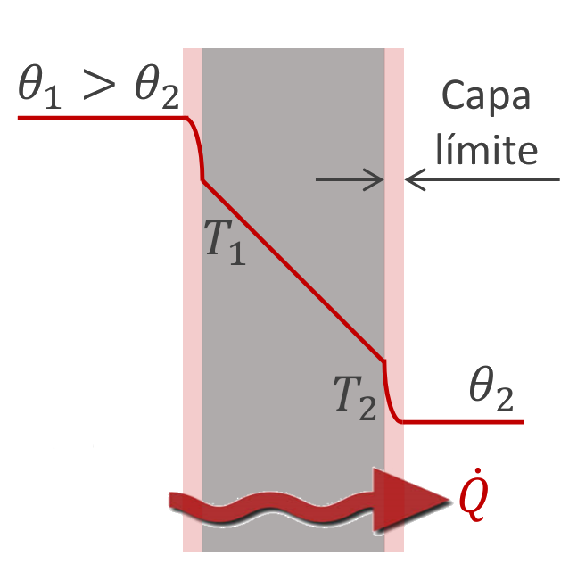

El calor generado (heat source) es igual al aumento de energía del sistema y el calor transferido al entorno:
\begin{align} \frac{\delta Q_{g e n}}{d t}=m C \frac{d T}{d t}+\unicode{x222F}_{S} \frac{\delta \vec{q}}{d t} \cdot d \vec{s} \end{align}- Estudiamos en régimen estacionario: \( \frac{dT}{dt} = 0 \), la temperatura en un punto no varia con respecto al tiempo.
llamamos fuente cuando entrega o recibe \(Q\) sin cambiar \(T\).
\begin{align} \dot Q = \frac{\delta Q_{g e n}}{d t}= \unicode{x222F}_{S} \frac{\delta \vec{q}}{d t} \cdot d \vec{s} \end{align}- \(\dot Q\) es la cantidad de calor transferido por unidad de tiempo.
Transmisión por contacto directo, choque de particulas. Las más energéticas le entregan energía a las menos energéticas.
\begin{align} \dot Q = -\lambda \vec A \cdot \vec \nabla T \end{align}-
\(\vec A[m^2]\): área de la superficie de intercambio de calor
- el sentido del vector se elige de manera tal que el calor positivo fluye en la dirección de temperaturas decrecientes.
- \(\vec \nabla T[\frac Km]\): gradiente térmico (con respecto a la posición), apunta en la dirección del máximo crecimiento de T
- \(λ = k [W/(mK)]\): conductividad térmica del material
- Plana: \(\sqrt A >> \text{grosor pared}\), (pared infinita) asumimos que la pared es muy grande para que no afecten los bordes.
- Cilíndrica: \(A = 2\pi \rho l\).
- Esferica: \(A = 4\pi r^2\)
Ambas son radiales (\(A\) depende del radio), desde el centro (del cilindro esfera) hacía afuera. (no através, ya que sería geometría plana)
Cuando elegimos la dirección que toma el \(\vec \nabla T\), podemos hacerlo con el versor adecuado (apuntando en temperaturas crecientes, inverso a donde se transmite el calor, ya que va de caliete a frio), pero luego el límite inferior de la integral tiene que ser escalar menor que el límite superior.
En cambio la otra opción es hacer que el gradiente apunte al mismo lado que el \(\vec A\), pero hacer que los límites de integración a ambos lados sean correspondientes.
- \(\int_{x_1}^{x_2} ... dx = \int_{T(x_1) = T_1}^{T(x_2) = T_2} ... dT\)
Mezclando los métodos, estaríamos indicando indirectamente el flujo de calor dos veces; en el versor del gradiente y en los límites de integración.
Transferencia de calor entre una superficie sólida y un fluido (líquido, gas, o plasma). Ocurre por el movimiento del fluido.
\begin{align} \dot Q = hA(T_{caliente} - T_{frio}) \end{align}- Ecuación escalar.
- Ejemplo pared: Entre un ambiente (con aire) y una pared, no hay un equilibrio térmico. Es imposible que tengan la misma temperatura, esto se debe a la convección producida en el aire. En un espacio antes de la pared tenemos la capa donde se produce esta convección, y la tenemos que tener en cuenta para calcular la temperatua de la pared.

Perfil de temperaturas: se obtiene calculando \(T(x), T(\rho), T(r)\) (la temperatura con respecto a la posición).
- Cambio el segundo limite por una variable (\(r_2, \rho_2, x_2 \to r,\rho,x\)), y despejo \(T_2\) (que cambio el nombre por \(T\)).
- Plana: perfil lineal
- Cilindrica: perfil logarítmico
- Esférica: perfil homográfico
Cuando tengo muchas capas, el ejercicio consiste en plantear un sistema de ecuaciones, planteando cada ecuación por cada etapa.
- Obs.: El \(\dot Q\) en cada etapa es el mismo. Un error común es sumar el \(\dot Q\) de cada etapa y hallar un “total”.
Luego despejar las diferencias de temperatura en cada ecuación. Y generalmente sumando y restando las ecuaciones despejo las temperaturas. (despues resuelvo para \(\dot Q\))
Ejercicio 6 (FASTIX):
- Deducimos por las temperaturas, que la mayor temperatura esta adentro, por lo que el calor se transmitirá hacia afuera del caño.
La transmisión de calor ocurre en 4 etapas:
- Convección entre fluido interior \((T=\theta_1)\) y superficie de hierro \((T=T_1)\).
- Conducción a través la superficie de hierro \((T=T_1)\) hasta fastix \((T=T_2)\)
- Conducción a través del FASTIX \((T=T_2)\), \((T=T_3)\)
- Convección entre fastix y ambiente \((T=\theta_2)\) \[ \left\{ \begin{array}\\ \dot Q =& h_{fluido} A (\theta_1 - t_1)\\ \dot Q =& -\lambda_{fe} \vec A \vec \nabla T\\ \dot Q =& -\lambda_{fastix} \vec A \vec \nabla T\\ \dot Q =& h_{aire} A (t_2 - \theta_2)\\ \end{array}\\ \right. \]
- Luego teniendo en cuenta que \(A=4 \pi r^2\), integramos la primera y la segunda (con respecto a \(r\) y \(t\)), y despejamos de todas las diferencias de temperaturas. sumamos/restamos las ecuaciones como corresponde para liberarnos de las temperaturas que son incógnitas, y resuelvo para \(\dot Q\).
Los electrones, al vibrar debido a la energía térmica, están permanentemente acelerándose y desacelerándose. Así irradian (emiten) energía con una distribución de longitudes de onda . Se conoce como radiación térmica